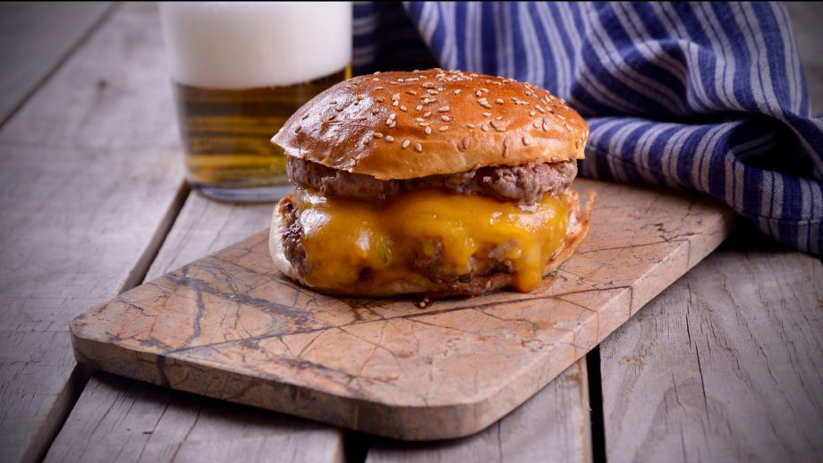

Cheeseburger

La magnifica Cheese Burger está hecha con nuestro exclusivo pan, nuestra
gigante hamburguesa especial y cuenta con abundante queso
Ingredientes:
- 300gr de carne picada de primera
- Sal
- 2 Panes de hamburguesa
- Pepinillo
- 4 Lonchas de queso cheddar
- Aceite de oliva extra virgen
- En primer lugar, con la ayuda de las manos damos forma
a la carne picada en 2 hamburguesas de unos 2 cm de
grosor. Salamos.
- Por otro lado, en una sarén con un chorrito de
aceite de oliva tostamos la parte interior de los 2
panes de hamburguesa.
- Escurrimos los pepinillos. Con un cuchillo laminamos
los pepinillos. Reservamos.
- En una parrilla caliente hacemos las hamburguesas 2 minutos
de cada lado. En el último minuto ponemos las 4 lonchas de
queso cheddar encima de dos hamburguesas. Echamos unas
gotas de agua en la parrilla. Tapamos
- Para el emplatado ponemos una hamburguesa con cheddar
sobre los panes inferiores. Colocamos otra hamburguesa sobre el
queso cheddar. Coronamos con las láminas de pepinillo.
Cerramos la hamburguesa con la parte superior del pan por encima.
- A disfrutar!